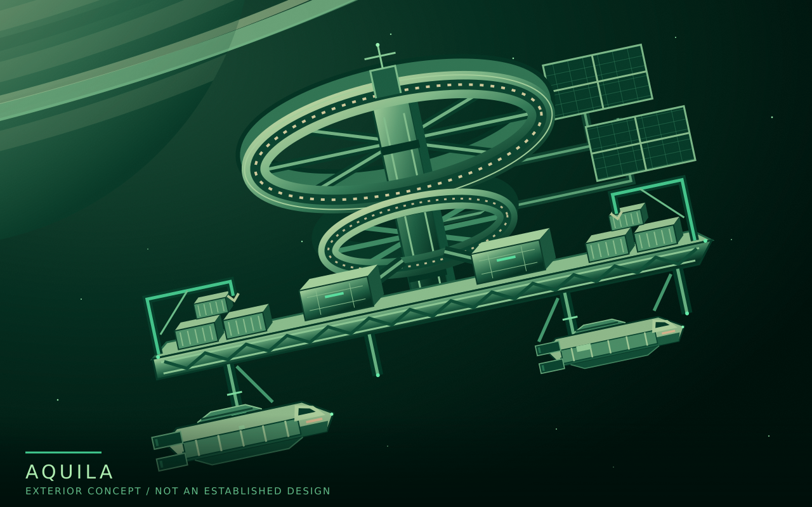

Lore / Aquila
Aquila
| Type | Orbital station town |
|---|---|
| Region | Saturn's ring-settlement network |
| Operator | Farspan Logistics |
| Established | After Keystone |
| Primary purpose | Freight hub |
| Residential gravity | Rotation |
Aquila is a major orbital station town operated by Farspan Logistics in Saturn's settlement network. Established after Keystone, it serves as a freight hub and a permanent home.
It is one of roughly three to five substantial station towns supporting the wider network of industrial installations and specialized moon outposts. Aquila competes with Keystone for traffic and local business, rather than serving as a compulsory gateway for every ship entering the settlements.
{kind=link}

Freight and competition
Aquila is Farspan's own freight hub, not merely a collection of leased facilities within another operator's station. It combines the company's long-haul transport business with station operations.
Farspan is also one of the outside carriers on which EarthWorks Industrial, Keystone's founding operator, depends for Earth-Saturn freight. The companies therefore have a supplier relationship while their station operations compete.
Aquila's role does not give Farspan an absolute monopoly over freight or access to Saturn. Neither does competition make the two companies permanent enemies or establish Farspan as an ally of anyone opposing EarthWorks.
Homes and work
Aquila is a station town, not only a working terminal. Its residential sections use rotation to provide gravity, and its population belongs to the wider settlement community of workers and households making homes at Saturn.
Residents live within the broader system of employment-dependent housing and services. Earth law and basic rights remain the expected standard, while operators use safety requirements and operational discretion to restrict choices in practice. Workplace representation does not resolve the separate question of resident government.
Name and shipping
Aquila takes its name from a constellation, following Farspan's station-naming tradition. The company's ships take names from navigational stars. Altair is a regular long-haul visitor; its name belongs to the brightest star in the constellation Aquila.
A regular port call does not mean a ship is always present. Arrivals, departures, and the handling of their cargo are part of the town's working life.
Details still open
Aquila's founding and construction sequence have not yet been defined. Its exact age, orbit, population, dimensions, internal layout, residential gravity level, and local administrative arrangements remain open.